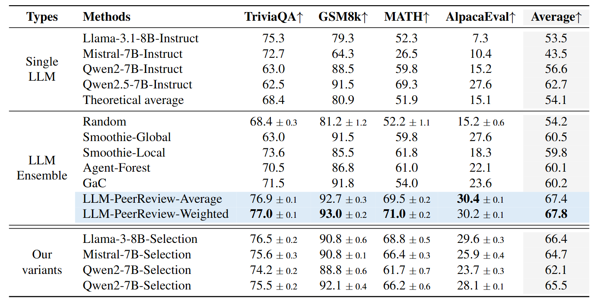
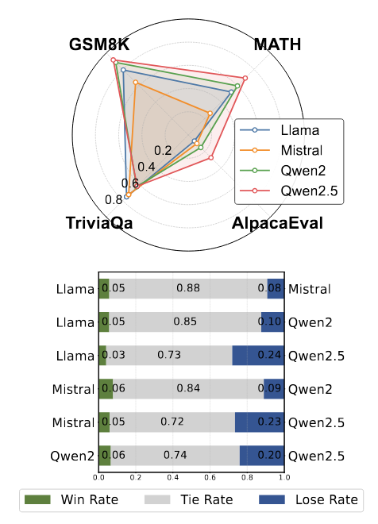
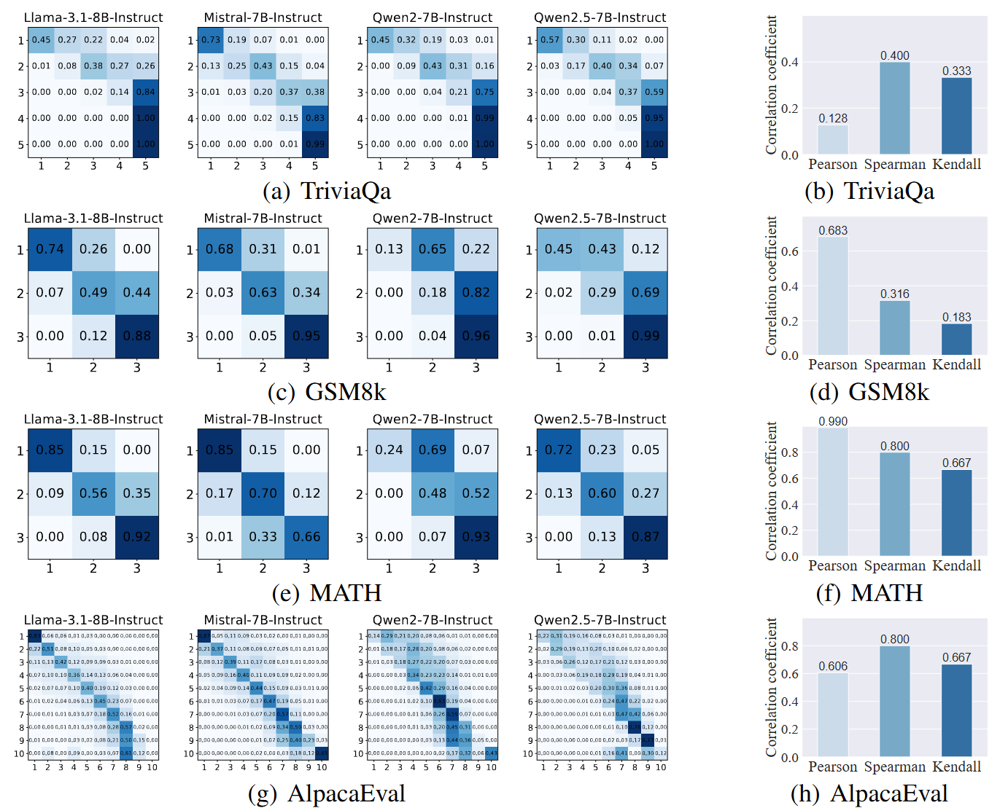
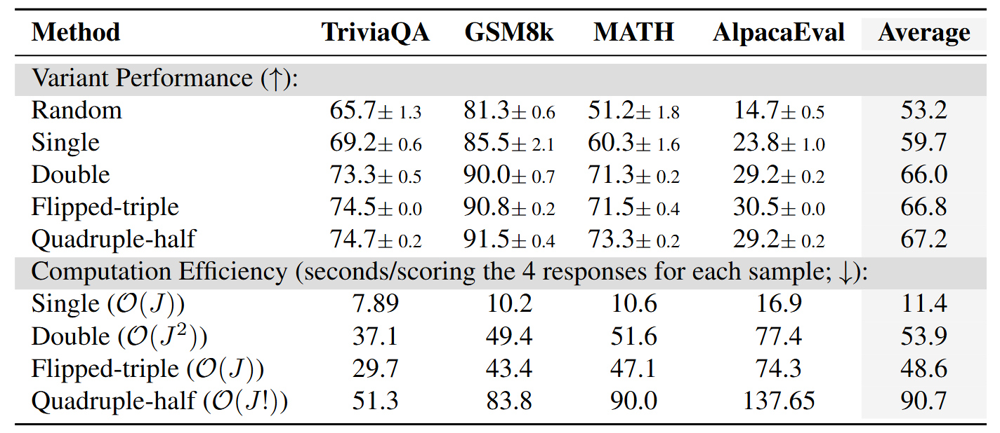

Results
From these tables and figures, we observe the following findings:
- The ensemble of the proposed LLM-PeerReview is effective. Both of our variants consistently outperform any single LLM and all LLM Ensemble baselines across all datasets. In the average performance, our two variant methods (67.4% and 67.8%) surpass the strongest single model, Qwen2.5, by 4.7% and 5.1%, respectively, and outperform the strongest ensemble method, Smoothie-Global, by 6.9% and 7.3%.
- Each LLM has its strengths and weaknesses. Our analysis reveals that models with the best overall performance may underperform on specific tasks compared to those with weaker overall results. This highlights that a strong LLM does not excel across all datasets, emphasizing the practical significance of LLM Ensemble.
- Aggregating multiple judges is crucial. Our variants using single LLMs as judges perform well, but aggregating scores from multiple judges provides clear benefits. Furthermore, the weighted truth inference in LLM-PeerReview-Weighted leads to additional performance gains compared to simple averaging, as it effectively identifies stronger and weaker judges through learned transition matrices.
- The flipped-triple scoring trick represents a performance-efficiency trade-off. Our evaluation of different scoring strategies shows that variants quadruple-half, flipped-triple, and double all offer noticeable de-biasing performance advantages over the single-scoring strategy, with flipped-triple achieving the best balance between performance and computational efficiency.
- Common scoring levels can generally be attempted. Our analysis demonstrates that the method exhibits slightly varying performance across different scoring levels, with no consistent tendencies, indicating robustness to scoring granularity.

Main experimental results. The method with the optimal performance is highlighted in bold.

LLM performance analysis. Radar chart of individual LLM performance and win-tie-loss analysis demonstrating varying strengths across tasks.

Transition matrices and correlation analysis. Learned scoring behavior of each LLM and correlation with judging capability.

Scoring strategies comparison. Performance and computational efficiency of different scoring strategies.